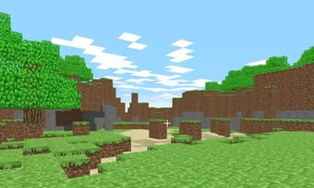

Introductions
In this program, you will learn a little about the game design process, and how to create a few simple games using the GDevelop game engine. There are no prerequisite skills for this course, but you will need either a PC (Windows, Mac, or Linux) or a tablet (...not recommended).
Before we start introducing GDevelop, you'll probably want to know...
What is a Game Engine?
Game Engines are software that helps in the game creation process. They provide some or all of the following...
- Common game operations (eg. moving a player)
- Rendering to screen (2D, 3D, or both)
- Game authoring tool (eg. map creator)
Examples of game engines includes:
- Unity (eg. Pokemon Go, Among Us, Kerbal Space Program)
- Unreal (eg. PUBG, Fortnite)
- Godot (eg. Sonic Colors, Ex Zodiac)
- GDevelop (eg. Hyperspace Dogfights, Lil BUB's HELLO EARTH)

What about Scratch?
Softwares like Scratch, Tynker, and MakeCode Arcade are great for learning to code, and you can certainly make very impressive games with them. But these software are designed to teach coding, and lacks many of the functionalities of a proper game engine.
If you have been making games in Scratch; Don't stop! Scratch is a great way to learn coding. But learn to use other game engines as well, and you'll be able to bring your game to a higher level.
Do I need a Game Engine?
No. The game engine is just a software that's written by a bunch of smart people. You're smart too, and I'm sure you can write code that's just as good...
...but using a game engine will make the game creation process a lot easier and faster. It's like building a car; you can manufacture every nut and bolt yourself, but why do that when you can just buy the nuts and bolts you need?
That said, not every game uses a game engine. Some games may have a unique game mechanics which doesn't fit well with any of the game engines, and the developer may choose to directly code their game without using one. One notable example would be Minecraft.

Game engine isn't always required